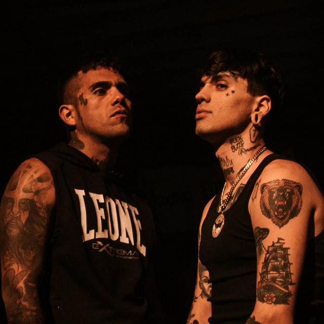
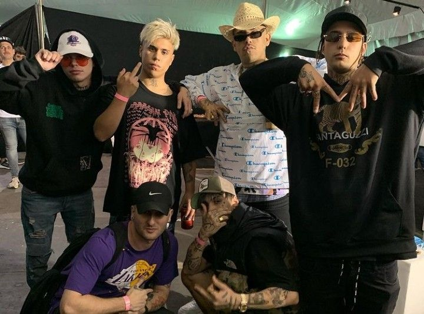

Biografia
C.R.O es un artista de Trap, Rap, Pop, Techno y Rock con una gran versatilidad. Tiene un mensaje claro en su música y demuestra ser un amante del buen sonido. Entre sus últimos lanzamientos Lambo (Remix) y Ciego Por el Club también se encuentran PHONE (ft. LIL XAN), Cuando Entramos en Acción (ft. KIDD KEO), Pa Mi Casa (ft. KEVIN ROLDAN) demostrando su proyección internacional Este 2021 también presentó: “MAL DE LA CABEZA”, disco de ROCK. “MURIENDO LENTO ” disco de TRAP y “LEYENDAS DE LA NOCHE” disco de TRAP. Participó en las ediciones de Buenos Aires Trap / Madrid Salvaje / Lollapalooza. También conforma el grupo BARDERO$ con el artista “Homer el Mero Mero”, juntos han sido sold out en Argentina, España y México en cada oportunidad.
La MDB
El colectivo y sello MDB Crew se formó en 2011 en Picún Leufú, Neuquén, Argentina con el objetivo de promover y difundir conocimiento. En su formación original, contaba con más de 20 miembros, pero actualmente cuenta con alrededor de 10 miembros.Los miembros originales de MDB Crew incluyen a Lucas Parce, Fazzini, Maxi Sanchez aka Maxistyle, Britson, Vagatela, Craxkero (C.R.O), Homer el Mero Mero, Chulu, Lil Troca , Franky Style y XTI.Uno de los proyectos más destacados de MDB Crew es el álbum titulado "La Fiesta Es De Nosotros". En cuanto a la producción del álbum, los nombres implicados fueron Benji Wonder, Kool South, Sosa 808 y Lo7us.
Barderos
Tomas Manuel Campos, más conocido como “C.R.O" y Lucas Darío Giménez, más conocido como "Homer el Mero Mero", comenzaron en las plazas de Neuquén (Argentina), donde el fenómeno del Hip Hop, el Rap y géneros Urbanos habían llegado a todas las plazas de Argentina para instalarse. Luego de escribir sus primeras canciones juntos, grabaron su primer disco “Pure Drug" que los hizo darse a conocer y comenzaron a tocar en localidades de la Patagonia Argentina. Desde el mensaje directo en sus letras, como también desde el sonido auténtico y sólido, Bardero$ se ha ganado el reconocimiento de ser referentes y los máximos exponentes del sonido callejero en Argentina; así mismo, rápidamente su música se ha expandido a todos los países hispanohablantes, obteniendo éxito inmediato.
